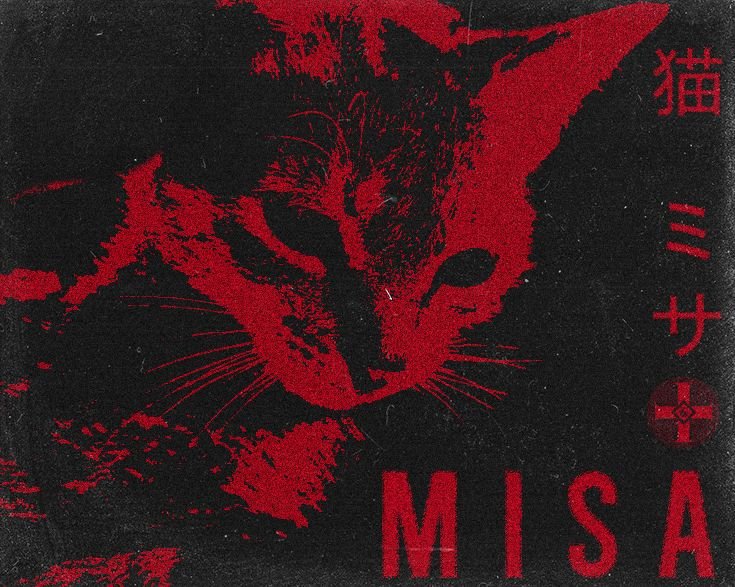

Fullstack developer
C# · JavaScript · Web
DAEESE
@daeese
Selected work
Click a project to open it.
Links
Policies and community invites.

Fullstack developer
C# · JavaScript · Web
@daeese
Click a project to open it.
Policies and community invites.